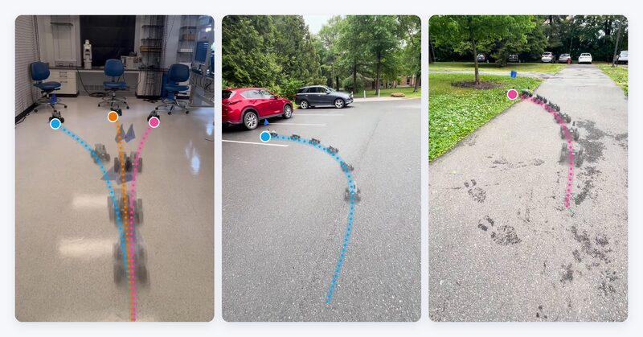
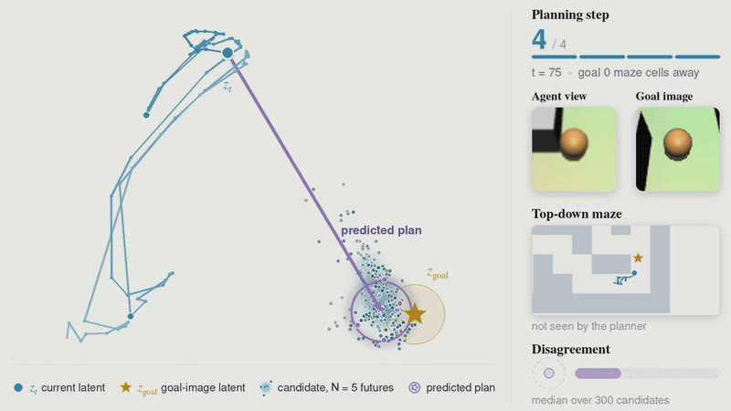
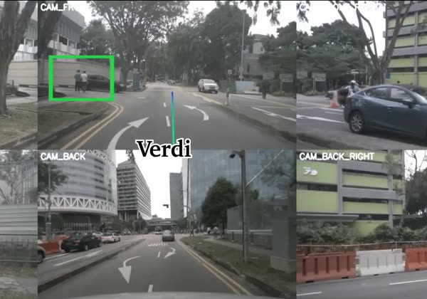
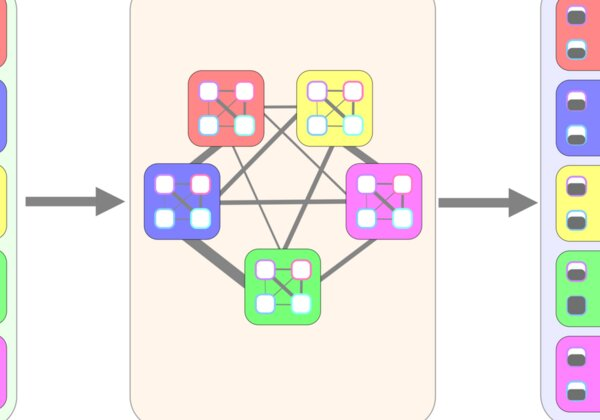

Bowen Feng
I am a Ph.D. candidate in robotics at Princeton University, advised by Felix Heide. I also work closely with Anirudha Majumdar and Dhruv Shah.
Before Princeton, I received an M.S. in Robotics from Northwestern University, where I worked with Todd Murphey and Matthew Elwin, and a B.S. in Mechanical Engineering with a minor in Mathematics from Rose-Hulman Institute of Technology.
Research
I work on generalist robot learning: building robots that actively reason, learn, and act proactively in an open, changing world, anticipating the emergent behaviors of the environment and the agents around them. My work distills the reasoning of vision-language models into fast, steerable action policies, and builds latent world models that plan and explore under uncertainty and partial observability. Applications include language goal-conditioned planning and navigation, autonomous driving, mobile manipulation, and multi-agent interaction.
News
- 2026ASD accepted to CoRL 2026.
- EpicWorldModel paper released on arXiv.
- EpicWorldModel accepted to NeurIPS 2026.
- VERDI released on arXiv.
Selected Publications
Papers I led as first or co-first author. * / † denote equal contribution.
-
until the repo is public. -->
-

Training Generalist Navigation Policies via Action Self-Distillation CoRL 2026Conference on Robot Learning project pagebibtex
@inproceedings{feng2026asd, title = {Training Generalist Navigation Policies via Action Self-Distillation}, author = {Feng, Bowen and Wang, Keqin and Yang, Yulong and Joshi, Amogh and Allen-Blanchette, Christine and Shah, Dhruv and Heide, Felix}, booktitle = {Conference on Robot Learning (CoRL)}, year = {2026}, }A VLM teaches itself language-conditioned navigation reasoning, with no human-annotated language or reasoning labels.
†Equal contribution, ‡joint supervision
-

EpicWorldModel: Exploration-driven Planning with Latent World Models NeurIPS 2026Advances in Neural Information Processing Systems project page arXivbibtex
@inproceedings{feng2026epicworldmodel, title = {EpicWorldModel: Exploration-driven Planning with Latent World Models}, author = {Feng, Bowen and Ost, Julian and Mei, May and Majumdar, Anirudha and Heide, Felix}, booktitle = {Advances in Neural Information Processing Systems (NeurIPS)}, year = {2026}, }A stochastic JEPA world model whose flow predictive variance guides exploration when the goal is out of sight.
*Equal contribution
-

VERDI: VLM-Embedded Reasoning for Autonomous Driving arXiv 2025arXiv:2505.15925 project page arXiv paperDistills the reasoning process and commonsense knowledge of a VLM into a modular end-to-end driving stack at training time, keeping real-time inference.
*Equal contribution
-

Behavior-Inspired Neural Networks for Relational Inference AISTATS 2025International Conference on Artificial Intelligence and Statistics paper arXivCouples graph neural networks with nonlinear opinion dynamics to infer interpretable, overlapping relations among interacting agents, improving long-horizon trajectory prediction.
*Equal contribution